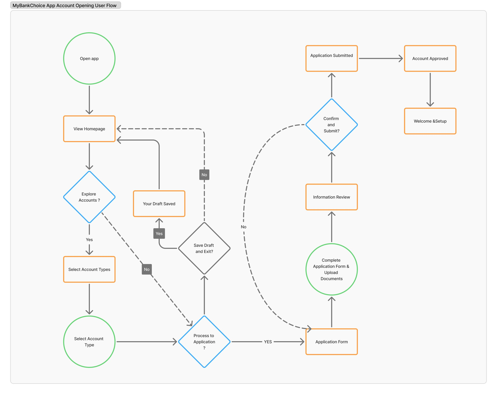

User Flow
Today, I used Figma to create the User Flow for a Bank Account Opening.
As I built and adjusted the flow, my thoughts became clearer. I realised that a user flow mainly focuses on the user's actions, the corresponding screens, and their decision-making points.
It reminds me of when I studied computer science in university. Back then, I had to physically draw circles, rectangles, diamonds, and arrows to represent different elements. Now, using Figma, a mouse, and AI assistance, the process is far easier and more efficient.
However, one thing remains constant: the creativity in my mind remains the only consistent element. As a UX designer learner, I must always prioritise my thinking and creation.
